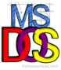

--- > Major Internet events that occurred at year 1991 < ---
Year: 1991
-
The first widely-publicized webcam was the XCoffee, also known as the Trojan Room coffee pot.
The camera began operating in 1991 with the help of Quentin Stafford-Fraser and Paul Jardetzky.
-
The term Internet of Things is coined.
-
Creative Labs releases a multimedia upgrade kit that includes a CD-ROM drive,
the SoundBlaster Pro sound card, a MIDI kit, and a variety of software applications.
The kit allows IBM compatible users to obtain all tools needed to meet the MPC standards.
-
The computer Monkey virus was first discovered in Edmonton, Canada in 1991.
-
The first Cybercafe opens in July 1991 in San Francisco.
-
The WWW became available for everyone on August 23, 1991.
-
The domain microsoft.com came online on May 2, 1991.
Year: 1992
-
Microsoft introduced Windows 3.1.
It sold more than one million copies in the first two months of its release on April 6, 1992.

-
Windows 3.1 allowed users to utilize several features previously not available in MS-DOS.
One of these new features was the use of a mouse,
which allowed users to navigate and manipulate data on the computer without using MS-DOS commands.
-
Windows also helped introduce multitasking to the masses,
which means you can run multiple applications at once without having to close out of each program before running another.
Windows with other GUI operating systems are one of the many reasons computers have become easier and more widely used.
-
IBM introduced ThinkPad,
the industry's first notebook with a 10.4-inch color TFT display and TrackPoint.
Year: 1993 - 1995
-
At the year of 1993 President Bill Clinton puts the White House and the United Nations online in 1993
and helps start the .gov and .org top-level domains. With the White House coming online it also made it possible to e-mail the President,
Vice President, and the First Lady.
-
The year 1995 started with a boom release of dot-com (.com) , Netscape introduced SSL in February.
On December 4, 1995, Sun Microsystems announced JavaScript and released it in Netscape 2.0B3.
-
On July 14, 1995, Karlheinz Brandenburg sent an e-mail announcing the .mp3 file extension had won a poll
and announced that the old .bit file extension should no longer be used.